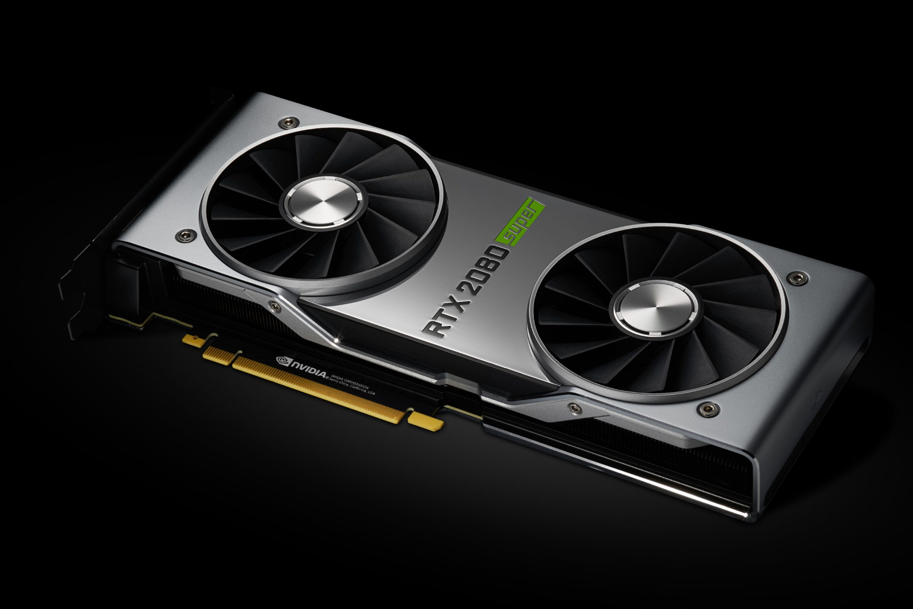

현재 그래픽 카드 시장은 단일 기능의 VGA 전용카드와 통합카드가 혼재해 있는 상태이며 사용자들도 양분되어 있다. 전용카드는 한 가지 기능만을 위해 제작되어 VGA 기능에 충실하며 성능도 좋은 편이고, 통합보드는 여러 기능을 포함하는 몇 가지의 칩을 함께 설계해 만들어 본래 기능인 VGA 기능은 떨어진다. 사무실이나 가정에서 워드프로세서나 텔레비전 수신, 인터넷 등을 사용한다면 다기능 통합보드가, 3D 가속 기능이 요구되는 3차원 게임이나 전문적인 그래픽 작업을 한다면 전용카드가 보다 효율적이다. [네이버 지식백과] VGA [video graphics array] (두산백과)
